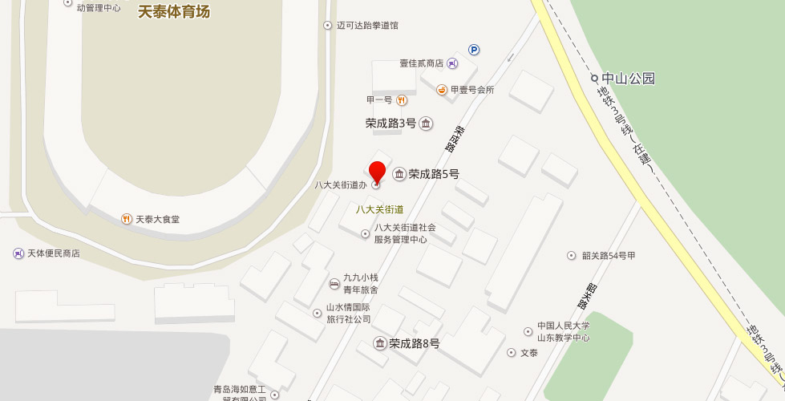

【地址】青岛市市南区荣成路7号
2004年5月，原金口路街道辖区的大学路以东部分与八大关街道合署为八大关街道。位于市南区中部，西部以大学路与江苏路社区公共服务委员会接壤，东至太平角六路与湛山街道相邻，北以兴安支路、太平山与市北区交界，南面至鲁迅公园、第一、二、三海水浴场。2005年末，面积6.72平方千米，人口12692户39229人，辖红岛路、金口路、莱阳路、福山路、栖霞路、八大关、太平角、佛涛路8个社区。
主要道路有兴安路、兴安支路、红岛路、红岛支路、登州路、鱼山路、鱼山支路、金口一路、金口二路、金口三路、莱阳路、琴屿路、海阳路、大学路、福山路、福山支路、南海路、文登路、武胜关路、武胜关支路、正阳关路、正阳关支路、紫荆关路、宁武关路、函谷关路、山海关路、嘉峪关路、居庸关路、临淮关路、邵关路、黄海路、汇泉路、武昌路、武昌支路、南海路、荣成路、佛涛路、鹊山路、香港西路、太平角一至六路、湛山路、湛山一至六路、岳阳路、郧阳路、石岛路、莲岛路、咸阳路等。景点有八大关旅游景区、小鱼山公园、康有为故居、第一海水浴场、中山公园、百花园等。
【金口路街道】青岛市市南区辖街道。位于区境中部。辖3个社区。［沿革］1954年成立。1996年，面积0.6平方千米，人口2.7万人，辖金口一路、金口二路、金口三路、莱阳路、鱼山路、大学路、红岛路、黄县路、张店路、龙口路、龙华路、海阳路12个居委会。2004年5月，原金口路街道办事处辖区的大学路以东部分与八大关街道办事处合署办公。【2011年代码及城乡分类］370202008：～002 111金口路社区 ～004 111大学路社区 ～006 111红岛路社区
【八大关街道】辖3个社区。［沿革］文登路街道成立于1954年12月。1996年，面积5.4平方千米，人口1.6万人，辖福山路、福山支路、公园、京山路、武昌路、八大关、佛涛路、太平角、岳阳路、湛山五路10个居委会和武昌路联合、青岛疗养院、佛涛路联合、舰队机关、海军疗养院、济南军区第一养疗养院6个家委会。1998年12月，文登路街道更名为八大关街道。因辖区内八大关风景区而得名。［2011年代码及城乡分类］370202009：～001 111八大关社区 ～002 111福山路社区 ～004 111太平角社区
【红岛路社区】2002年5月中国海洋大学家委会改为红岛路社区。2004年，红岛路、登州路2个社区合并为红岛路社区。位于中国海洋大学东侧。东邻栖霞路社区，南依鱼山路与金口路社区相连，西接大学路，北毗市北区。面积0.6平方千米。2005年末，人口8700余人。居民以海洋大学、国家海洋一所、三十九中教职员工为主。
【金口路社区】2001年2月，金一、金二、金三3个居委会合并为金口路社区。位于八大关街道的西北部。东依小鱼山公园，南部濒临汇泉湾，西与大学路相接，北与海洋大学相邻。面积0.85平方千米。2005年末，人口2070户6300人，居民小组38个。
【莱阳路社区】2001年2月，莱阳路、海阳路2个居委会合并为莱阳路社区。位于八大关街道西部。东邻文登路与南海路第一海水浴场，两面环海，北与金口路社区相邻。面积0.6平方千米。2005年末，人口1451户5883人。居委会驻莱阳路18号。
【福山路社区】2000年，福山支路、福山路2个居委会合并为福山路社区。位于八大关街道中部。东邻汇泉广场，南依第一海水浴场，西与金口路社区相邻，北与栖霞路社区相接。截止到2005年末，辖区面积0.3平方千米，居民1032户、3194人，居民楼院83个，居民小组20个。
【栖霞路社区】2001年由公园居委会改为栖霞路社区。位于八大关街道中部。2005年末，人口3459人。
【八大关社区】居委会成立于1954年，以辖区内的八大关风景区命名。2001年1月，武昌路、八大关2个居委会合并为八大关社区。辖区东邻香港西路，两面环海，北与文登路汇泉广场相连。居委会驻荣城路7号。2005年末，人口1286户3978人，居民小组25个。
【太平角社区】居委会成立于1954年，以辖区内的太平角命名。2001年1月改为太平角社区。位于八大关街道东南部，东邻东海路，两面环海，北与湛山街道接壤。面积1.95平方千米。2005年末，人口1987户5961人。居委会驻湛山路3号。
【佛涛路社区】2004年8月由原北海舰队家委会改制而来。位于八大关街道东北部。北依太平山，东邻太平角居委会，南依香港西路。面积1.2平方千米。2005年末，人口1628户3360人，居民小组32个。